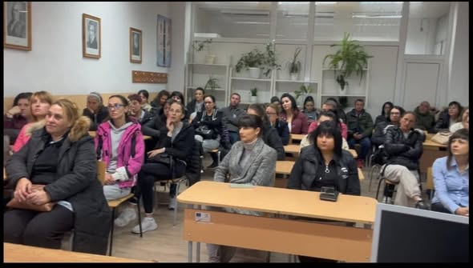

01 · Представяме
Разговорът започва с родителите
В Пазарджик програмата беше представена пред родители като част от разширяването на инициативата. Срещата запозна семействата с подхода на ранната превенция и ролята на родителя.
Работата в региона продължава с участието на Ренета Камберова — координатор на програмата за Югозападна България.